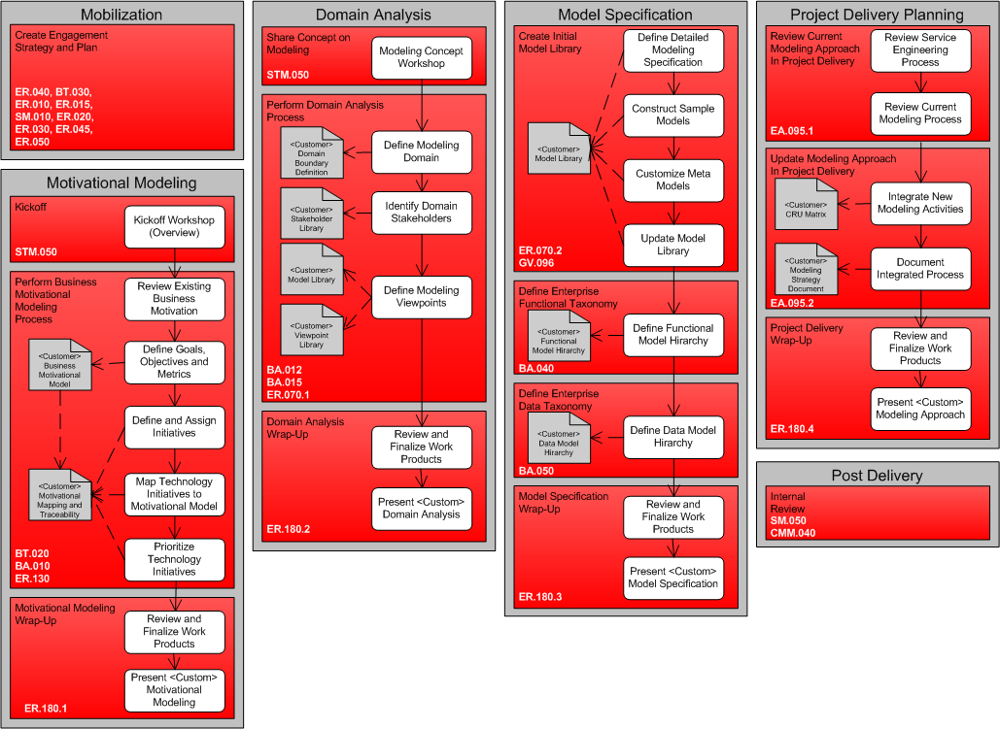

OUM |
SOA Modeling Planning Supplemental Guide |
||
Method Navigation |
Current Page Navigation |
||
|
|
||||||||
The SOA Modeling Planning View and Supplemental Guide are used for the planning of modeling activities in conjunction with SOA project delivery, and the development of a Motivational Model (as part of the Business Strategy Identification), process and data models, and service meta models. A service based on this view can be executed in a series of four optional areas. This view is designed to prepare organizations to incorporate modeling into their service engineering process. It should be used as a guideline for engagements that are delivered to organizations that want to plan for modeling in their SOA delivery process and define models in support of such efforts. As with all SOA planning views, this view is used to plan one particular aspect of the SOA strategy and can be combined with other SOA planning views based on the organization’s needs.
NOTE: OUM uses the term view to mean “an initial tailoring of the workplan specific to a focus area, discipline, service offering or technology/product architecture”. This document also uses the terms view and viewpoint in line with the IEEE 1471 standard: a view is “a representation of the overall architecture that is meaningful to one or more stakeholders”. In other words these two uses of the term view do not contradict each other but rather apply the same principle in two different contexts: OUM views are method views and IEEE 1471 views are architecture views. This document is part of an OUM view which, among others, describes how to define architecture views for your projects.
As SOA and other enterprise Information Technology (IT) initiatives such as BPM and data management become commonplace in the industry, the need to holistically categorize, visualize and manage interrelated assets increases. Categorization and visualization are most effectively done using models. In addition, for SOA, models can play a key role in service identification, analysis, design, deployment, and discovery. They help to clarify complex ideas and provide a means to share information in a way that people with different backgrounds can relate. Since most IT organizations already do some form of modeling, applying models to SOA and service engineering is a natural course of action.
Recognizing the need for a modeling strategy to support enterprise-computing initiatives, OUM include tasks for enterprise modeling. It includes an overall modeling approach as well as strategies for modeling business motivation, processes, functions, data, and services in support of service engineering. This is carried forward in various OUM views, including this SOA Modeling Planning view.
This view is designed to help organizations define their modeling strategy to support SOA. It provides a means to determine which models are required and the specifications that each model should adhere to. It formalizes the structure of SOA concepts in the form of meta-models, as well as the relationships between models and the steps in the delivery process where they are created.
This view also develops a strategy to model processes, functions, and data holistically in support of enterprise level architecture initiatives such as SOA, BPM, and logical data modeling. It also includes business motivational modeling to help organizations align IT objectives such as SOA and BPM with business goals.
Four specific types of modeling are addressed in this view:
Although models can be valuable tools to convey ideas, designs, and patterns, they take time to create. It is important to create models that serve a necessary purpose, and to create them at the proper level of abstraction, with the proper content. Since models may be developed for many different types of audiences, a formalized model specification approach is beneficial.
The most likely opportunity for the use of this view is immediately after an engagement following the SOA Engineering Planning View, where the engineering process has been defined and a modeling strategy is lacking. It is also recommended to be proposed as part of any strategic SOA engagement as it is an important part of the SOA planning effort and all organizations should at least consider it.
As always, it is important that the organization understands the purpose of the engagement, its scope, and work products. The following value and work products are available for the organization as part of this view:
The following are not considered part of this view:
Main Objectives of this OUM View:

There are six areas in the SOA Planning View, each with its own set of tasks.
MOBILIZATION - Mobilization begins with the qualification of the effort to scope the engagement to best meet the needs of the organization. An engagement may be based solely on this view, but may also be increased to cover multiple OUM views or tasks to produce a more fully featured planning and delivery engagement; in particular it may be combined with the SOA Engineering Planning View. It may also be scoped back to focus on only a subset of the five areas areas covered in this view, streams, tasks, and work products, while omitting others. Additional guidance on Mobilization can be found in the SOA Modeling Planning Task Guidelines.
MOTIVATIONAL MODELING - Motivational Modeling is used to capture business motivation and map it to IT and technology initiatives. This provides the ability to trace IT activities back to business goals and justify efforts and expenditures. Additional guidance on Motivational Modeling can be found in the SOA Modeling Planning Task Guidelines.
DOMAIN ANALYSIS - Domain Analysis is used to define the domain that this modeling engagement will address, define the target audience models are created for, and define the models themselves. It is a necessary precursor to Model Specification. Additional guidance on Domain Analysis can be found in the SOA Modeling Planning Task Guidelines.
MODEL SPECIFICATION - Model Specification is used to drive out the details of the models identified during Domain Analysis. It is a technical delivery with a strong emphasis on modeling techniques, standards, and tools. Additional guidance on Model Specification can be found in the SOA Modeling Planning Task Guidelines.
PROJECT DELIVERY PLANNING - Project Delivery Planning is used to determine where modeling activities need to be inserted into the organization’s software development lifecycle (SDLC). This activity requires knowledge of the organization’s SDLC as well as an understanding of the modeling efforts for which you need to account. Additional guidance on Project Delivery Planning can be found in the SOA Modeling Planning Task Guidelines.
POST DELIVERY - Following the successful completion of an engagement, a few post-delivery activities should take place, i.e., acceptance sign-off and documenting lessons learned. Additional guidance on Post Delivery can be found in the SOA Modeling Planning Task Guidelines.
Refer to the SOA in OUM page for access as well as descriptions for all the SOA views in OUM.
The SOA Modeling Planning process has been mapped to the Envision focus area of Oracle Unified Method to help show which tasks would typically be performed during each of the five areas from Mobilization to Project Delivery Planning.
See the mapping document and SOA Modeling Planning view for applicable OUM tasks.

Copyright © 2006, 2016, Oracle and/or its affiliates. All rights reserved.